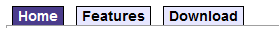

BasicTabControl
The BasicTabControl control displays a tab menu according to data provided by a two dimensional array. BasicTabControl doesn't rely on the Kentico database or API — you can use the control to navigate to pages outside of Kentico websites.
Tip: If you want to display a tab menu for pages on a Kentico website, you can use the CMSTabControl control, which has built-in support for loading Kentico pages.
Getting started
The following is a step-by-step tutorial that shows how to display a simple tab menu using the BasicTabControl control:
Create a new Web form in your web project.
Drag the BasicTabControl control from the toolbox onto the form.
The code of the BasicTabControl looks like this:
<cms:BasicTabControl ID="BasicTabControl1"runat="server"/>Add the following CSS styling code between the tags of the web form's <head> element:
<style type="text/css">/* Tab menu class definitions */.TabControlTable { FONT-SIZE: 14px; FONT-FAMILY: Arial,Verdana }.TabControlRow { }.TabControl { BORDER-RIGHT: black 1px solid; BORDER-TOP: black 1px solid; FONT-WEIGHT: bold; BACKGROUND: #e7e7ff; BORDER-LEFT: black 1px solid; CURSOR: pointer; COLOR: black }.TabControlSelected { BORDER-RIGHT: black 1px solid; BORDER-TOP: black 1px solid; FONT-WEIGHT: bold; BACKGROUND: #4a3c8c; BORDER-LEFT: black 1px solid; CURSOR:default; COLOR: white }.TabControlLinkSelected { COLOR: white; TEXT-DECORATION: none }.TabControlLink { COLOR: black; TEXT-DECORATION: none }.TabControlLeft { WIDTH: 1px }.TabControlRight { WIDTH: 0px }.TabControlSelectedLeft { WIDTH: 1px }.TabControlSelectedRight { WIDTH: 0px }</style>This sets CSS styles that modify the appearance of the generated tab menu. The BasicTabControl control renders tabs even without any CSS classes, but they are extremely basic and not very user friendly.
The example uses the local <head> element only for convenience. If you wish to use the control on a Kentico website, it is recommended to define the CSS classes in the website's stylesheet through the CSS stylesheets application.
Add the following code just after the <cms:BasicTabControl> element to display a stripe under the tabs.
<hr style="width:100%; height:2px; margin-top:0px;"/>Switch to the web form's code behind and add the following reference:
usingCMS.DocumentEngine.Web.UI.Configuration;Add the following code to the Page_Load method:
// Defines and assigns the menu's tabsBasicTabControl1.AddTab(newTabItem{Text =" Home ",RedirectUrl ="http://www.kentico.com"});BasicTabControl1.AddTab(newTabItem{Text =" Features ",RedirectUrl ="http://www.kentico.com/Product/All-Features"});BasicTabControl1.AddTab(newTabItem{Text =" Download ",RedirectUrl ="http://www.kentico.com/Download-Demo/Trial-Version",Tooltip ="Some tooltip"});// Selects the first tab by defaultBasicTabControl1.SelectedTab = 0;BasicTabControl1.UrlTarget ="_blank";Save the changes to the web form and its code behind file.
Right-click the web form in the Solution explorer and select View in Browser.
The resulting page displays a tab menu.

Configuration
You can set the following properties for the BasicTabControl:
|
Property name |
Description |
Sample value |
|
HideControlForZeroRows |
Hides the control when no data is loaded. Default value is false. |
|
|
RenderedHTML |
Allows you to get or set the HTML code rendered by the control. You need to set this property before the Render event - e.g. in the OnLoad event. |
|
|
RenderLinkTitle |
Indicates whether the control renders TITLE tags for the tab links. |
|
|
SelectedTab |
Index of the selected tab. |
|
|
SelectFirstItemByDefault |
Indicates whether the first tab should be selected by default. |
|
|
TabControlIDPrefix |
Prefix that the BasicTabControl uses for all element IDs in the rendered HTML code. Allows you to avoid conflicts when using multiple tab controls on the same page. |
"FirstTabs" |
|
TabControlLayout |
Specifies the layout orientation of the tab control. |
"Horizontal" |
|
Tabs (Obsolete) |
A 2 dimensional string array where each row represents a tab and the columns represent the following: tabs[0, 0] = title Note:
|
tabs[0, 0] = " Home "; |
|
UrlTarget |
Specifies the target frame for all URLs. |
"_blank" |
|
UseClientScript |
Indicates if client script should be generated for each tab. |
|
|
UsePostback |
Indicates if the control causes a postback when a users clicks a tab. |
|
|
ZeroRowsText |
Text shown if no records are found. This text is not visible when the control is hidden by the HideControlForZeroRows property. |
"No records found." |
|
Method |
Description |
Sample value |
|
AddTab |
Use the AddTab method to define the menu's tabs. Accepts CMS.DocumentEngine.Web.UI.Configuration.TabItem objects as the parameter. |
BasicTabControl1.AddTab(new TabItem |
Appearance and styling
The appearance of the BasicTabControl control is determined by CSS classes. You can use the following CSS classes to modify the design of the control:
|
CSS class name |
Applies to |
|
TabControlTable |
Table that contains the tabs (<TABLE> tag). |
|
TabControlRow |
Table rows (<TR> tags). |
|
TabControl |
Tab items (<TD> tags). |
|
TabControlSelected |
The selected tab item (<TD> tag). |
|
TabControlLink |
Tab item links - if a URL is specified (<A> tags). |
|
TabControlLinkSelected |
Selected tab item link - if a URL is specified (<A> tag). |
|
TabControlLeft |
Left side of the tab items (<TD> tags). |
|
TabControlRight |
Right side of the tab items (<TD> tags). |
|
TabControlSelectedLeft |
Left side of the selected tab item (<TD> tag). |
|
TabControlSelectedRight |
Right side of the selected tab item (<TD> tag). |